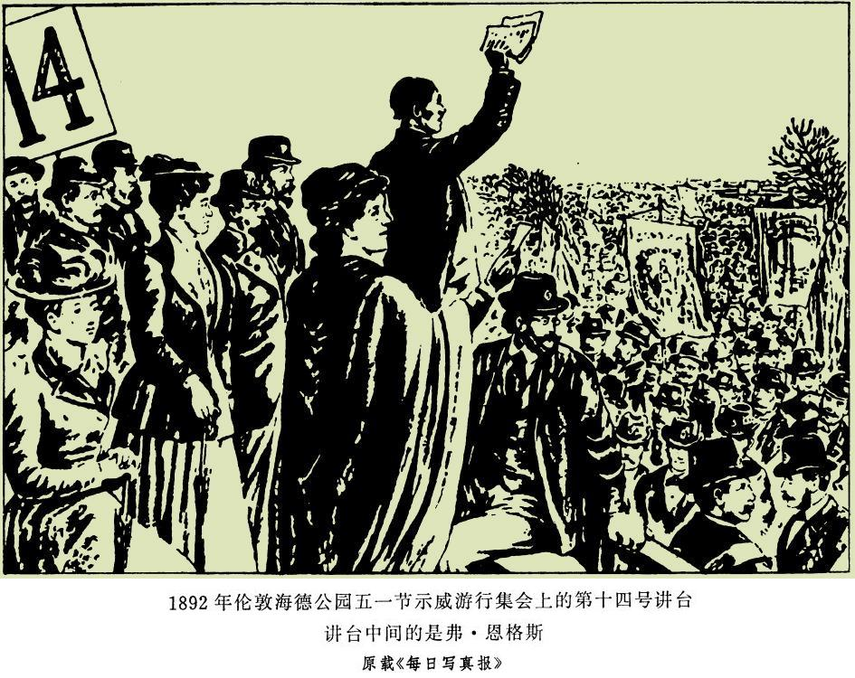

147.致劳拉·拉法格
勒-佩勒
1892年5月5日于伦敦
亲爱的劳拉：
匆忙写几句。他们本来想使我们在这里遭到失败的事，却以真正的胜利而告终。296星期日那天FN1我们只有两个讲台，可是也只有这两个讲台既吸引了群众又吸引了报界。你大概已经看到了我给你寄去的一幅登在《每日写真报》上的画297，这幅画绘制时没有告诉我们。第十四号讲台即国际讲台那天取得的成绩最大。由于事情非常凑巧，劳动介绍所148的鲁赛耳来到了我们的讲台，他大概是被普律唐·戴维耳埃、阿尔吉里阿德斯和阿道夫·斯密斯一起赶出来的。这样，我们就有两个法国人、两个俄国人FN2、德国人伯恩施坦、奥地利人路易莎、波兰人门德尔森和一个犹太人FN3，此外，还有西班牙人肯宁安-格莱安夫人和一些英国人FN4。
这次示威游行规模之大，甚至超过前两次，证明这里的事情在向前发展，尽管采取的是英国人所喜欢的独特而迂回的途径。

晚上，门德尔森夫妇和伯恩施坦夫妇都在我们这里，当然还有杜西和爱德华，博尼埃把鲁赛耳也带来了。我们大家都很高兴，喝了五月混合酒；胖子鲁赛耳大声赞赏不止。而阿尔吉里阿德斯一伙于次日晨对他说，他们在他们陷进去的，确切些说，被拖进去的（这决不是双关的俏皮话）那一群人里，寂寞得要命。
我在十分焦急地等候《社会主义者报》，想了解一下我们在法国5月1日选举258中取得的成就。你寄来的几份报纸在这方面没有提供任何消息。当然，即使我们没有取得多数，至少也应取得一定的少数。
不管怎样，使我感到高兴的是各地都平静地度过了这一天。说
五一节是胡闹和叛乱日，这完全是资产者的骗局，我们一点也不想上当。我们想显示一下我们的力量，如此而已。至于我们什么时候使用这支力量，这是我们的事，而不是我们的敌人的事，如果这只取决于我们的话。
谢谢你寄来了几份报纸。吃饭铃响了！彭普斯和派尔希一家都在我这里，所以我不能多写了。我要同他们一起出去，让他们看看他们在威特岛好久没有看到的一些景致。他们以及路易莎向你和保尔致最衷心的问候。
永远是你的 弗·恩格斯
脚 注
FN1 5月1日。——编者注
FN2 沃尔霍夫斯基和斯捷普尼亚克-克拉夫钦斯基。——编者注
FN3 沙耶。——编者注
FN4 爱·艾威林、爱·马克思-艾威林、莫利斯、曼、皮·柯伦等人。——编者注
注 释
148 看来，恩格斯指的是载于1891年7月29日《社会主义者报》第45号的一篇题为《终于是这样了！》（《Enfin！》）的通讯。通讯中说，巴黎的劳动介绍所“迄今一直是可能派的支柱，它正在变成它理应成为的、不分主义和派别的一切工人的共同之家”。
劳动介绍所（Bourses de Travail）是法国十九世纪八十年代后半期以来建立的工人联合会的名称，它们主要设在大城市市参议会之下，由各工团（工会）的代表组成。最初，劳动介绍所的建立受到国家机关的鼓励，并常常受其资助，国家机关曾打算利用劳动介绍所作为建立所谓“社会和平”的据点。但是，劳动介绍所的活动情况很快就引起了政府的担心，因而极力反对劳动介绍所的进一步推广。劳动介绍所除了对失业者进行劳动安排外（每一介绍所都设有专门的部门），还在组织新的工团、组织工人的职业教育以及组织罢工斗争方面发挥了作用。1892年，圣亚田代表大会上建立了劳动介绍所联合会，但是在联合会里起领导作用的却是可能派（见注30）。可能派力图利用这一组织反对工人党所领导的全国联合会，并破坏法国马克思派对工会的影响。后来，劳动介绍所则处在无政府工团主义者的影响之下。——第135、334、501页。
258 在1892年5月1日的市镇选举中，法国工人党得了十万多张选票，取得了很大胜利。——第290、315、328、334、336、435、572页。
296 恩格斯指的是伦敦1892年庆祝五一节的活动。这一天，海德公园举行了由伦敦工人和社会党组织共同举办的盛大集会，有几十万人参加，开了两个半小时。欧洲其他国家的工人代表也参加了这次庆祝活动。——第334页。
297 1892年5月2日的《每日写真报》上登了一幅画（见本卷第334―335页之间的插图），上面画有1892年伦敦海德公园五一节示威游行集会上的第十四号讲台。——第334页。